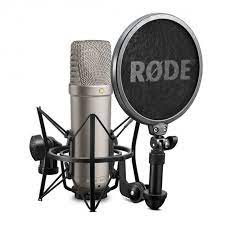
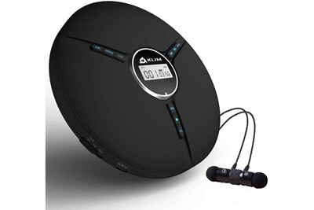

A propos de la boutique
Une page À propos de nous aide votre entreprise à faire une bonne première impression et est essentielle
pour renforcer la confiance et la fidélité des clients. Une page À propos de nous doit veiller à couvrir
les informations de base sur le magasin et ses fondateurs, expliquer le but de l’entreprise et en quoi elle diffère
de la concurrence, et encourager la discussion et l’interaction. Voici quelques modèles gratuits, des exemples
et des exemples de pages À propos de nous pour aider votre boutique en ligne à se démarquer de la foule.
Promotions
Album. 1 Album. 2
Album. 3


Le microphone électrostatique présente l'avantage Quand il est utilisé pour écouter des CD de musique, À l'origine, un Disc Jockey ou DJ est un animateur qui produit des
d'excellentes réponses transitoire et bande passante, le lecteur de CD peut être intégré à divers types d'appareils effets sonores,avec sa voix et surtout, comme le terme anglais l'indique,
entre autres grâce à la légèreté de la partie mobile portables ou domestiques, à un combiné autoradio, etc. avec une platine portant un disque 45 tours ou 33 tours.
(uniquement une membrane conductrice, à comparer Il peut aussi être un appareil séparé, portable ou domestique,
avec la masse de la bobine d'un microphone dynamique). à relier à une chaîne hi-fi, un amplificateur audio ou un casque.